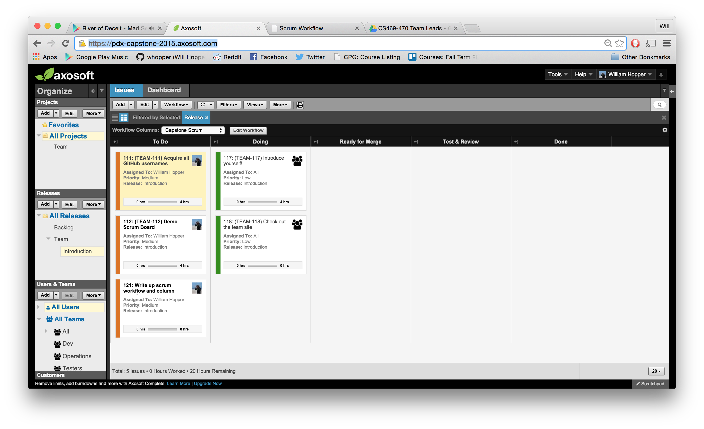

The following is a general run-though of our scrum board, which is hosted through Axosoft. Included are guides for useful features and the usage of our workflow columns.
The Kanban Board

During sprints, you will spend most of your time on the Kanban view of our issue tracker. All of the tickets that we planned to accomplish in the current sprint will appear in our workflow columns, which can be seen above. To enter this view, simply click the small box in the upper left-hand corner of the screen, directly below the Issues tab. The similar button on the left will bring you to the issue tracker.
The first time you access this view, you'll need to select the correct sprint filter from the Views dropdown just above the board. Each sprint will have a saved view with the title being the start and end dates of the sprint.
Workflow Columns
As you work on a ticket, move it across the board as you make progress. The columns have the following meanings:
To Do
Tickets in this column are in need of work or attention, and are not currently being worked on.
Doing
Tickets that are currently being worked on with nothing impeding progress.
Ready for Merge
Tickets which have outstanding pull requests. The code is ready to be reviewed and merged if the review and continuous integration tests pass.
Test & Review
Once code for a ticket has been merged, the ticket is placed in this column for final review. It is in need of functional review and sign off to be completed.
Done
Tickets in this column have passed all tests and reviews, and are fully resolved. Hurray!
Ticket Fields
Tickets have several fields which help to keep track of their general statuses.
Project
The project name the ticket is associated with. We may end up having multiple projects (front-end, back-end, etc).
Release
The sprint which the ticket is part of.
Workflow Step
The Kanban workflow step the ticket is currently in.
Assigned To
Who is responsible for carrying out the next step on the ticket. This will change several times over the course of a ticket's life. While developing a feature, assign the ticket to yourself. If reviewing a ticket, assign it to yourself.
Priority
How urgent the completion of the ticket is. High generally means the ticket needs extra attention or is blocking other work. Medium is standard priority, while low is something that could be pushed back if needed.
Initial Estimate
How much effort we expect the ticket to require. Use the story point option. One point is an easy, trivial change, while five points is a large, difficuly change.
Status
The current Kanban status of the ticket.
Links
If you file a pull request for a ticket, add a link to it in this field.
Description
The general description of the issue. Make this as detailed as possible, and provide steps to reproduce if the issue is a bug.
Comments
General comments about the issue. If you are functionally reviewing a ticket and complete your review, leave your notes here before resolving.